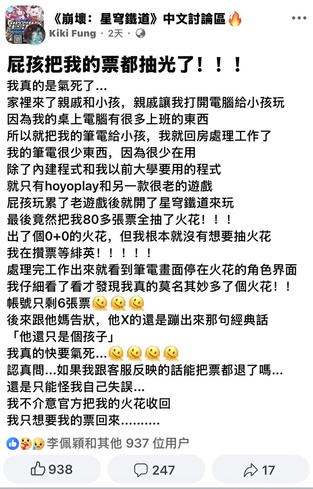

为什么環状線会光临 Facebook 呢？是因为崩铁完成一个活动需要“打败该地区的战力党强者”，然而環状線打了和 NPC 打赢了两把这个任务还是没有完成。后来谷歌一下在 Facebook 里才发现是要先去桑博那里接取支线任务之后再和 NPC 进行对战才能完成任务……
崩铁这个任务引导做的什么玩意😅

崩铁这个任务引导做的什么玩意😅

想起環状線高中去大连研学的时候，環状線妹妹的平板上登录着環状線的崩铁账号。6 月 2 日晚上環状線玩崩铁的时候玩一半忽然下线了，環状線立刻意识到是妹妹在那个平板上登录崩铁给環状線挤下去了，于是赶紧远程从那个平板上退出了登录状态
如果環状線的动作再慢一些的话，環状線攒的 100 https://t.co/5yjjIEnX0Z
如果環状線的动作再慢一些的话，環状線攒的 100 https://t.co/5yjjIEnX0Z